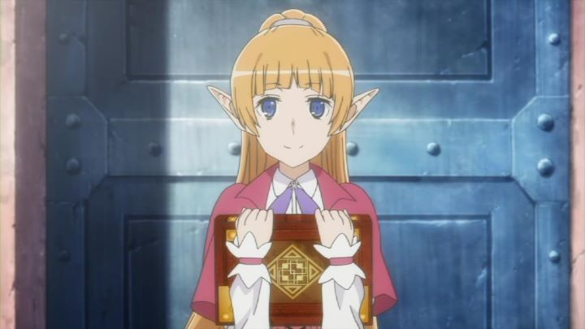

Disclaimer: This is a review of the spin-off series to "DanMachi," with the full title of "Is It Wrong To Try To Pick Up Girls In A Dungeon? On The Side: Sword Oratoria." To save on typing one of the longest anime titles I've ever seen, it will be referred from here on as "Sword Oratoria." "Is It Wrong To Pick Up Girls In A Dungeon?" (also known as just "DanMachi") was a surprise hit, taking the popular trope of an RPG-inspired adventure (with a unique Greek-inspired style) and elevating its otherwise simplistic core themes. It helped to have its' poster character being a cute anime girl with an iconic blue ribbon acting as a bra to her bouncy assets. Being both a crowd-pleaser with fans and critics, it was inevitable that the first season, airing in 2015, would receive a sequel season or two. And it did... sort of.In 2017, it got "Sword Oratoria," a spin-off that actually runs in parallel to the events in season 1 of "DanMachi." Not entirely unwelcome, and inspired, perhaps, even if it was only based on an existing spin-off light novel series. But what about those who want to see the continuing story of adventurer Bell Cranel and his goddess Hestia? Fans would have to wait until 2019; only then would they get plenty of material, in a feature film, second season, and an announced third. Four years is a long time to wait though, an unfortunate reality for a swamped industry (presumably, studio J.C. Staff was already fully booked for years out, unable to fully act on the surprise success, an issue that has been reported for a few studios after global streaming became commonplace). And a parallel spin-off doesn't sound particularly satisfying, especially if it would focus on Ais Wallenstein and her Loki Familia, the seemingly invincible heroine and love-interest to Bell, who comically had a quiet and socially-awkward personality. I wasn't certain what to expect with "Sword Oratoria" and its story. Running in parallel, it makes sure to remind the viewer of that fact, weaving in several scenes from the main series, with Bell or other characters running in the background. It runs almost fully with episodes 1 through 12 of the first season. While Bell was training to become stronger like Ais, the Loki Familia (like all the other groups) were on their own adventures and missions. We get to watch Ais, the barefoot Amazon twins, and the rest, engaging in fun character interactions a-plenty. The most familiar comparison I can think of is of Disney's "The Lion King," and their direct-to-video semi-sequel "The Lion King 1 1/2." To help give purpose, the true main character of "Oratoria" isn't really Ais, but magic weilder Lefiya. She has promise, but is the lowest-ranking member of the Loki Familia, and in initial quests, she barely has time to chant a spell before getting knocked out, and saved by the others. Seeing Ais in battle, the "sword princess," one of the strongest fighters in the land, Lefiya is inspired to grow stronger to fight alongside her. It's a thematic stand-in for Bell, complete with the love-interest aspect (initial allusions of respect grow to "notice me Sempai," then to clear expressions of a lesbian crush). For that matter, several unrequited love interests seem to be present, both within the Loki family and from the outside, certain to both make eyes roll and smiles grin. Loki, a female goddess, is a bit handsy herself, with a running joke of wanting to feel up her female members (all of whom are smart enough to jump out of the way, except Lefiya, who gets the most of it).  There is an "actual" plot too: midway through the season, the Loki famila come across a mysterious quest that leads to a murder, with greater questions behind the purpose. "Sword Oratoria" has a much greater focus on "mystery" than "DanMachi" originally did, with an interesting female villain introduced as a dangerous rival to Ais. Ais, thankfully, gets a bit of much-needed character development, with greater allusions to her history and lineage that help explain her personality and skills. Unfortunately, both subplots, destined to come at a head, are left completely wide-open and unfullfilled by the final episode... either the studio lacked time or budget for the one or two lost episodes needed to finish it, or the story was designed this way to lead into future seasons. Regardless, it was a frustrating end after a promising middle. So "Sword Oratoria" doesn't appear to have any meaningful purpose, at least nothing that would pay off until much later in the franchise. Despite that, I still had a surprising amount of fun with it. The fan-service, both in sexual teasing or just character interactions, were plenty enjoyable. Even the references to Bell in season 1 kept making me smile, both out of nostalgia and to see the other side of each conversation. These are classic strengths of anime, and the show knows how to capitalize on them. It's a shame the whole thing still feels mostly like a lazy cash-grab, with as much as 30% of the events (and reused animated scenes and dialogue) taken word-for-word from the first season, unable to justify itself for any but the most hardcore of "DanMachi" fans. And it goes without saying, watching this without prior knowledge of the first season is pointless. That laziness isn't just with the story. "Sword Oratoria"'s production values also seemed to step down a peg. It still looks and feels like the series, but the first season had a bit more inspiration, and notably better animation in action scenes. The best animation in "Oratoria" are in scenes directly reused from that first season, making the difference even more clear to attentive viewers. Everything else, from the music, to the English dub, is just "fine," only meeting the minimum standards of the first season.A little birdy from the future tells me this downturn continues for the subsequent material too (I got to this late in 2020, give me a break). Basically, if you want to keep watching "DanMachi" after the first season, you do so for the characters, and nothing else. And a lot of fun can still be had with that. Hardcore fans of "DanMachi" will still enjoy "Sword Oratoria" plenty, in the same way a fan would invest in drama-CDs. But it isn't the least bit essential, even for fans.
- "Ani" More reviews can be found at : https://2danicritic.github.io/ Previous review: review_Is_It_Wrong_To_Try_To_Pick_Up_Girls_In_A_Dungeon Next review: review_It's_Such_a_Beautiful_Day